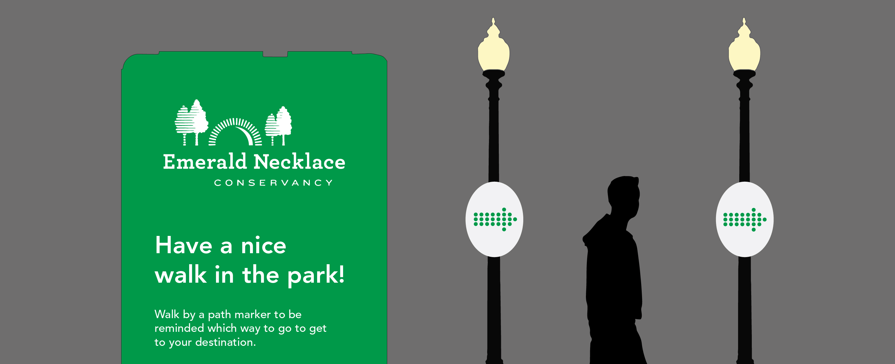
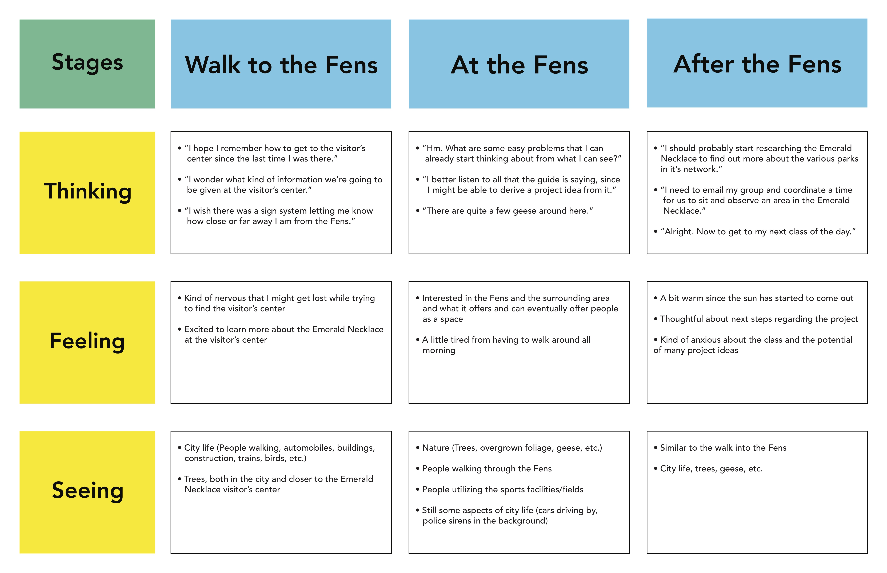
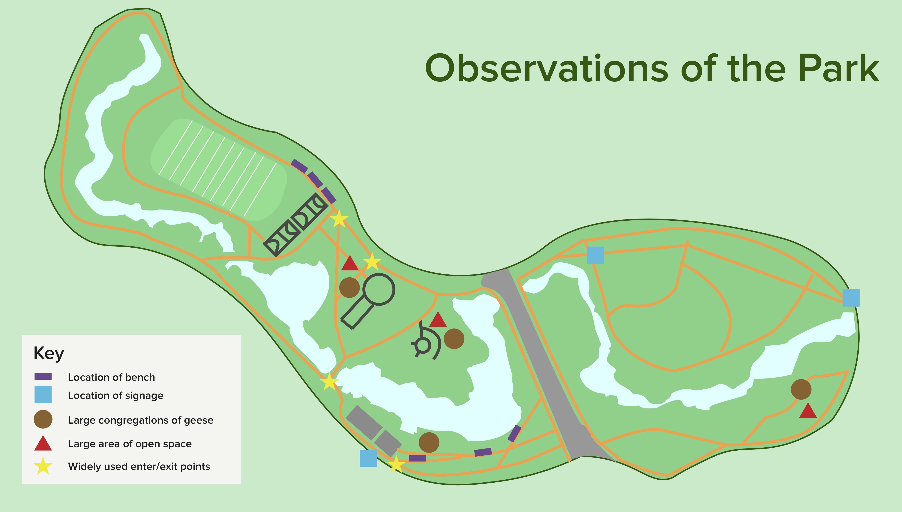
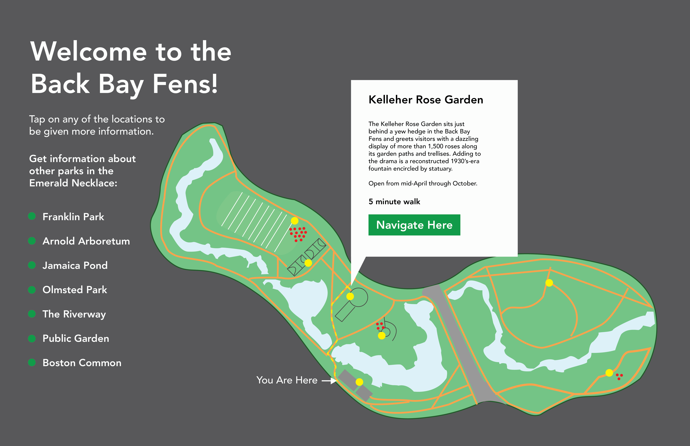
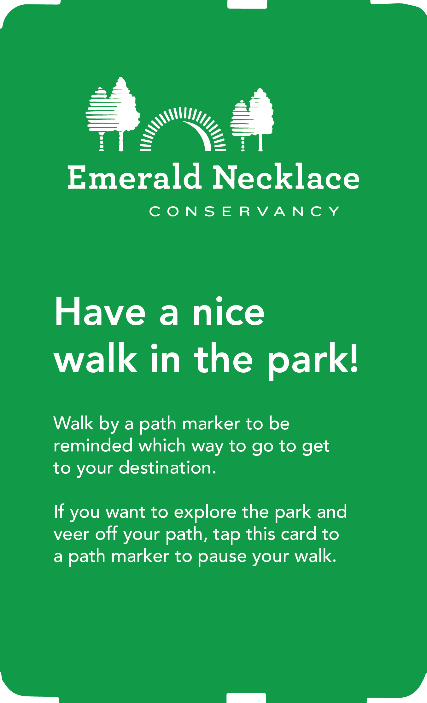
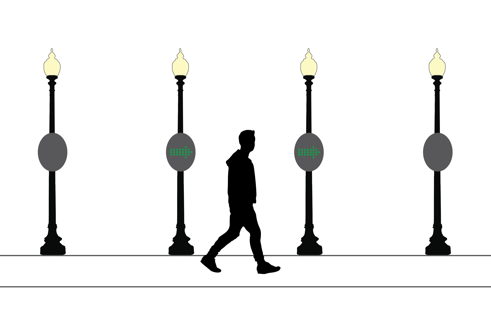

Fall 2016
Experience Design 1
User Research, UX, Service Design
Over the course of a semester, my classmates and I were given the task of figuring out how we could get more people to visit the parks in Boston's Emarald Necklace. Our professor gave us no other prompts than to go out and visit a park of our choice and design a solution to a problem we see.
We were all paired into groups of two and three for the first part of the project. Each group went out on their own to the parks and conducted observations and interviews to get an initial sense of what the parks were like. My group did our observations in the Back Bay Fens across from the Northeastern campus and visited the location twice to thoroughly conduct our observations and write down our own experiences walking through the park.


Once we had completed our observations, everyone took the information that they had gathered and each decided on an aspect of the parks they wanted to design a solution for. After the trouble that I had knowing where everything was in the Back Bay Fens, I decided that I wanted to make the act of a user finding their way through each of the parks more intuitive, while not making use of their smartphone.
The solution that I ended up designing centered around a touch-enabled wayfinding station that would be able to show a user the amenities available in the park and also be able to direct them towards a specific place in the park.
Once a destination in chosen, rather than just offering a list of directions, the station will print out a ticket containing an RFID chip programmed with the users desired location. The user just has to take the ticket and start walking.
LED signs attatched to lightposts along the path will illuminate with an arrow showing the user which direction to continue walking. Once a user reaches their destination, they can dispose of the card in a dedicated recyling bin to be reused in the future.


